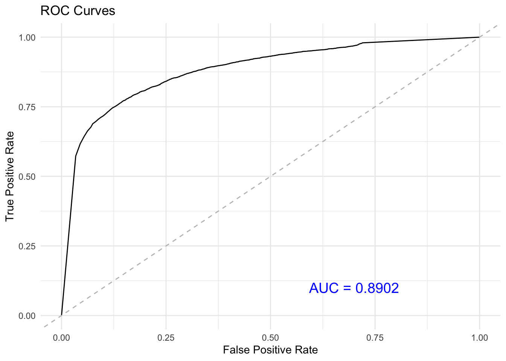

We build a Naive Bayes classifier that can handle any classification problem, assuming continuous variables follow a normal distribution. This classifier is not limited to the specific problem in the exercises.
1 Function naiveBayes
The following function fits a Naive Bayes model to the data, estimating prior probabilities and conditional probabilities for both continuous and categorical features. This function takes four inputs: the data, the response (a character string specifying which column contains the class labels), the prior (if provided), and the Laplace smoothing parameter. The output is a list containing the conditional probabilities for each variable, the prior probabilities, an indicator of which columns are numeric or categorical, and the levels of the class labels. The returned list is of class naiveBayes, which allows for method dispatching specific to this model.
Code
naiveBayes <-function(data, response, prior =NULL, alpha =0) {# Step 1: Extract the target variable (response)# 'label' contains the target class from the 'response' column of the data label <- data[[response]] level <-unique(label)# Identify unique classes in the target variable# Remove the response column from the data #(since it should not be used as a predictor) data[[response]] <-NULL# Step 2: Calculate prior probabilities if not providedif (is.null(prior)) { prior <-prop.table(table(label)) }# Step 3: Identify numeric and categorical columns is_num <-sapply(data, function(x) is.numeric(x))# Step 4: Process numeric and categorical columns separately tbl <-lapply(data,function(col){if (is.numeric(col)){# For numeric columns, calculate the mean and variance#for each class in the target variable means <-tapply(col, label, mean,na.rm =TRUE) sd <-tapply(col, label, sd,na.rm =TRUE)cbind(means,sd) }else {# For categorical columns, calculate smoothed counts # and conditional probabilities# Do not display the count of NA values (this is the default behavior) counts <-table(label, col)# Apply Laplace smoothing to avoid zero probabilities smoothed_counts <- counts + alpha # Calculate conditional probabilities smoothed_probs <-prop.table(smoothed_counts, margin =1) return(smoothed_probs) } })# Return the model as a list containing: #1) prior probabilities, 2) tables of statistics, 3) and metadata result <-list(prior = prior, tables = tbl, isnumeric=is_num,level=level)# Assign a class to the result for method dispatchclass(result) <-"naiveBayes"return(result)}
2 Function predict.naiveBayes
The predict function takes a trained Naive Bayes model and new data as inputs, and returns predicted class labels or class probabilities depending on the specified type. For missing values (NA), the function handles them by assigning neutral probabilities (effectively ignoring them in the likelihood calculation).
Code
predict.naiveBayes <-function(model, newdata, type ="class") {# Step 1: Convert categorical variables to factors with matching levelsfor (i innames(model$tables)) {if (!model$isnumeric[i]) {# Ensure categorical variables in newdata # have the same levels as those in the model newdata[[i]] <-factor(newdata[[i]],levels =colnames(model$tables[[i]])) } }# Step 2: Prepare for prediction (pre-compute constants) logprior <-log(model$prior) len <-length(model$prior)# Match newdata columns with model attributes match_idx <-match(names(model$tables), names(newdata)) # Step 3: Preallocate log probability matrix for faster computation Logprob <-matrix(0, nrow = len, ncol =nrow(newdata))# Step 4: Compute log-probabilities for both numeric and categorical datafor (v inseq_along(match_idx)) { nd <- newdata[, match_idx[v]] # Get the relevant column of newdataif (model$isnumeric[v]) {# For numeric columns, calculate Gaussian likelihoods tbl <- model$tables[[v]] means <- tbl[, 1] sd <- tbl[, 2]# Apply Gaussian log-likelihood using vectorized operations Logprob <- Logprob +sapply(nd, function(x) {# If value is NA, return a vector of zeros for all classesif (is.na(x)) {rep.int(0, len) } else {dnorm(x, mean = means, sd = sd, log =TRUE)# Compute log likelihood } }) } else {# For categorical columns, # retrieve the log probabilities from the model's tables Logprob <- Logprob +sapply(nd,function(x){if (is.na(x)){# If value is NA, return a vector of zeros for all classesrep.int(0,len) } else {# Lookup the log-probability # avoid log(0)log(model$tables[[v]][, x]+1e-8) } }) } }# Step 5: Add log-priors to the computed log-likelihoods Logprob <-sweep(Logprob, 1, logprior, "+")colnames(Logprob) <-NULL# Step 6: Return predictions based on the specified type ('class' or 'raw')if (type =="class") { pred_classes <- model$level[apply(Logprob,2,which.max)]return(pred_classes) } else {# If type == "raw", return probabilities for all classes probs <-exp(Logprob) # Convert log-probabilities back to normal scale# Normalize probabilities so they sum to 1 probs <-apply(probs,2,function(x)x/sum(x) ) return(t(probs)) }}
3 Function confusion_matrix and roc_auc
Two functions that plots the ROC curve for a binary classification model and compute the confusion matrix. The function takes three inputs: the true labels, the output from the prediction function (which typically returns the predicted probabilities), and the name of the class to be considered as the positive class (set to 1). You can customize this function for multi-class classification by applying a ‘one-vs-all’ approach, where the ROC curve is generated for each class by treating it as the positive class and all other classes as the negative class.
Code
confusion_matrix <-function(true_labels, predicted_probs, class_name,threshold=.5){# Convert true labels to binary true_labels <-ifelse(true_labels==class_name,1,0)# Classify based on the current threshold predicted_class <-ifelse(predicted_probs[,class_name] >= threshold, 1, 0)# Calculate TP, FP, TN, FN from true labels and predicted classes TP <-sum(true_labels ==1& predicted_class ==1) FP <-sum(true_labels ==0& predicted_class ==1) TN <-sum(true_labels ==0& predicted_class ==0) FN <-sum(true_labels ==1& predicted_class ==0)# Return the confusion matrix as a 2x2 matrixmatrix(c(TP, FN, FP, TN), nrow =2, byrow =TRUE,dimnames =list("Actual"=c("Positive", "Negative"),"Predicted"=c("Positive", "Negative")))}roc_auc <-function(true_labels, predicted_probs, class_name) {# Convert true labels to binary binary_labels <-ifelse(true_labels==class_name,1,0)# Number of positive examples (M) and negative examples (N) M <-sum(binary_labels) N <-length(binary_labels)-M# Extract predicted probabilities pos_prob <- predicted_probs[,class_name]# Internal function to compute TPR and FPR compute_tpr_fpr <-function(binary_labels,pos_prob , threshold) {# Classify based on the current threshold predicted_class <-ifelse(pos_prob >= threshold, 1, 0)# Calculate TP, FP, TN, FN from true labels and predicted classes TP <-sum(binary_labels ==1& predicted_class ==1) FP <-sum(binary_labels ==0& predicted_class ==1) TN <-sum(binary_labels ==0& predicted_class ==0) FN <-sum(binary_labels ==1& predicted_class ==0)# Calculate TPR (True Positive Rate) and FPR (False Positive Rate) TPR <- TP / (TP + FN) FPR <- FP / (FP + TN) youden<- TPR-FPR distance <-sqrt((1-TPR)^2+FPR^2)return(c("TPR"=TPR,"FPR"=FPR,"treshold"=threshold,"youden"=youden,"distance"=distance)) }# Define a sequence of threshold values from 0 to 1, with a step of 0.001 thresholds <-seq(0, 1, by =0.001)# Compute TPR and FPR for each threshold roc_data <-vapply(thresholds,function(thresh){compute_tpr_fpr(binary_labels, pos_prob, thresh) },numeric(5))# Specify the result to be length 3 numeric vector# Calculate AUC auc <- (sum(rank(pos_prob)[binary_labels==1])-M*(M+1)/2)/(M*N)# Convert to a data frame for easier use roc_data <-as.data.frame(t(roc_data))# Find the threshold with the maximum Youden's index # and the minimum distance to the (0,1) point tresh1 <- thresholds[which.max(roc_data$youden)] tresh2 <- thresholds[which.min(roc_data$distance)]# Compute confusion matrices for these thresholds conf_matrix_youden <-confusion_matrix(true_labels,predicted_probs,class_name,tresh1) conf_matrix_distance <-confusion_matrix(true_labels,predicted_probs,class_name,tresh2) p <-ggplot(roc_data, aes(x =FPR, y =TPR)) +geom_line() +geom_abline(slope =1,intercept =0,linetype="dashed",color="gray") +labs(x ="False Positive Rate", y ="True Positive Rate", title ="ROC Curves") +theme_minimal()+# Annotate AUC on the plotannotate("text", x =0.7, y =0.1, label =paste("AUC =", round(auc, 4)),size =5, color ="blue")return(list(auc = auc,optimal_tresholds =c("youden"=tresh1,"distance"=tresh2),confusion_matrix=list("youden"=conf_matrix_youden,"distance"=conf_matrix_distance),roc_plot = p ))}
4 A real example
Apply the Naive Bayes classifier to the adult dataset for classification. The data can be found in Github
library(ggplot2)data <-read.csv("adult.data",na.strings =" ?", header=FALSE)newdata <-read.table("adult.test",sep=",", skip =1,na.strings =" ?")newdata$V15 <-gsub("\\.$", "", newdata$V15)system.time({ model <-naiveBayes(data,"V15",alpha =1) pred <-predict(model,newdata,"raw") roc <-roc_auc(newdata$V15,pred," <=50K")})#> user system elapsed #> 1.754 0.074 1.828roc$optimal_tresholds#> youden distance #> 0.985 0.971roc$confusion_matrix#> $youden#> Predicted#> Actual Positive Negative#> Positive 9278 3157#> Negative 470 3376#> #> $distance#> Predicted#> Actual Positive Negative#> Positive 9832 2603#> Negative 657 3189
Code
roc$roc_plot

This function prints a summary of the fitted model, including the prior probabilities, the conditional probabilities for each variable, and an indication of whether each variable is numeric or categorical.
Code
print.naiveBayes <-function(model) {cat("Naive Bayes Model\n")cat("=================\n")# Print class levelscat("\nClass Levels:\n")print(model$level)# Print prior probabilitiescat("\nPrior Probabilities:\n")print(model$prior)# Loop through the model tables to display statistics for each featurecat("\nFeature Statistics:\n")for (i inseq_along(model$tables)) { feature_name <-names(model$tables)[i]cat("\nFeature:", feature_name, "\n")if (model$isnumeric[i]) {# For numeric features, print mean and standard deviationcat("Type: Numeric\n") stats <- model$tables[[i]]print(data.frame(Mean = stats[, 1], SD = stats[, 2])) } else {# For categorical features, print conditional probabilitiescat("Type: Categorical\n") probs <- model$tables[[i]]print(as.data.frame.matrix(probs)) } }cat("\n=================\n")}